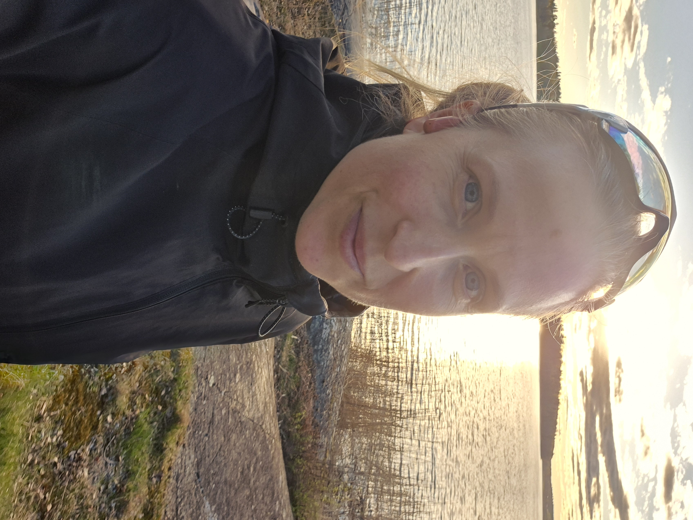

Hi, I’m Mily!
Building smarter ways of working — and always chasing the next finish line.

About me
I’m curious by nature and I like turning ideas into something real.
I work in finance and digital transformation, but I’m just as interested in the technology behind it — especially AI, automation and all the possibilities that come with finding smarter ways to do things. I enjoy experimenting, learning by building and figuring things out as I go.
Outside work, running is a huge part of my life. I’m happiest when I have something new to explore, a challenge ahead of me or an idea I haven’t tried yet — which is also pretty much why this website exists.
RunWithMily
Running is where I challenge myself, clear my head and go looking for the next adventure.
I love the everyday training, but I’m probably at my happiest when there’s a bigger challenge ahead — a race to prepare for, a new trail to explore or a distance that feels just slightly unreasonable.
Over the years that has meant everything from road races and marathons to long days out on the trails. For me, running isn’t only about getting faster. It’s about seeing what I can do, going somewhere new and having a reason to keep pushing a little further.
Explore my runningWork
I work at the intersection of finance, technology and change.
Much of my work is about exploring how AI, automation and digital tools can make everyday work simpler, smarter and more useful. I work with everything from ideas and experiments to solutions built with tools such as Power Platform and AI.
What interests me most isn’t technology for its own sake. It’s what happens when people actually start using it — when a repetitive task disappears, a process becomes easier or someone suddenly realises that they can build something themselves.